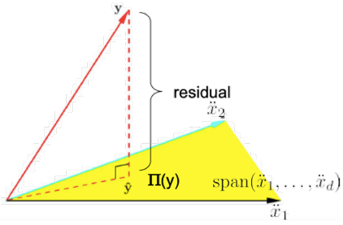
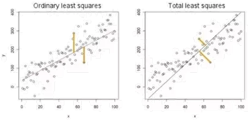
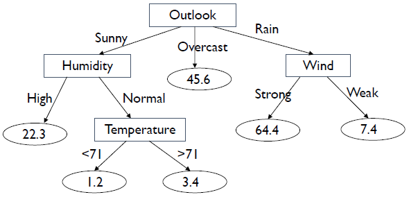
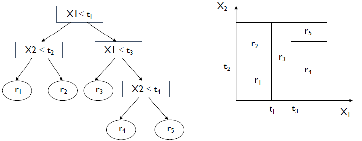

1 Towards formalizing ‘learning’
1.1 The basic process of learning
- Observe a phenomenon
- Construct a model from observations
- Use that model to make decisions/predictions
1.2 A statistical machinery for learning
Phenomenon of interest:
- Input space: X; Output space: Y
- There is an unknown distribution D over (X,Y)
- The learner observes m examples (x_1 ,y_1,\dots, x_m ,y_m ) drawn from D
Construct a model:
- Let F be a collection of models, where each f: X \rightarrow Y predicts y given x
- From m observations, select a model f_m in F which predicts well.
- Generalization error of f: \mathrm{err}(f):=\mathbb{P}_{(x,y)\sim D}\left[f(x)\ne y\right] Notice this error is calculated on the whole distribution D
- We can say that we have learned a phenomenon if \mathrm{err}(f_m)-\mathrm{err}(f^*)\le \epsilon \quad f^*:=\argmin_{f \in F}\mathrm{err}(f) for any tolerance level \epsilon of our choice.
For all tolerance levels \epsilon > 0, and all confidence levels \delta > 0, if there exists some model selection algorithm \mathcal{A} that selects f_m^\mathcal{A} \in \mathcal{F} from m observations i.e.
\mathcal{A}:(x_i,y_i)_i^m \mapsto f_m^\mathcal{A}
And \mathrm{err}(f_m^\mathcal{A})-\mathrm{err}(f^*)\le \epsilon with probability at least 1-\delta over the draw of the sample.
We call
- The model class \mathcal{F} is PAC-Learnable. (Probably Approximate Correct)
- If m is polynomial in \frac{1}{\epsilon} and \frac{1}{\delta} then \mathcal{F} is Efficiently PAC-Learnable.
A popular algorithm:
- Empirical risk minimization (ERM) algorithm. f_m^{\text{ERM}}:=\argmin_{f \in \mathcal{F}}\frac{1}{m}\sum_{i=1}^m\mathbf{1}\{f(x_i)\ne y_i\}
2 PAC Learning Simple Model Classes
Theorem (finite seize \mathcal{F} ):
Pick any tolerance level \epsilon > 0, and any confidence level \delta > 0 let (x_1,y_1),\dots,(x_m,y_m) be m examples drawn from an unknown \mathcal{D} if \displaystyle m \ge C \cdot \frac{1}{\epsilon^2}\ln\frac{\lvert \mathcal{F}\rvert}{\delta}, then with the probability at least 1- \delta \mathrm{err}(f_m^\mathrm{ERM})-\mathrm{err}(f^*)\le \epsilon \boxed{\mathcal{F}\text{ is efficiently PAC-learnable}}
Proof Sketch
- Define Generalization error of f \text{err}(f):=\mathbb{E}_{(x,y)\sim \mathcal{D}}\left[\mathbf{1}\{f(x_i)\ne y_i\}\right]
- Define sample error of f \text{err}_m(f):=\frac{1}{m}\sum_{i=1}^m\left[\mathbf{1}\{f(x_i)\ne y_i\}\right] Fix any f \in \mathcal{F} and sample (x_i,y_i), define random variable \mathbf{Z}_i^f=\mathbf{1}\{f(x_i)\ne y_i\} Now we can re-write generalization error and sample error as below
- Generalization error of f \text{err}(f):=\mathbb{E}_{(x,y)\sim \mathcal{D}}\left[\mathbf{Z}_1^f\right]
- sample error of f \text{err}_m(f):=\frac{1}{m}\sum_{i=1}^m\left[\mathbf{Z}_i^f\right]
2.1 Lemma (Chernoff-Hoeffding bound’63)
Let \mathbf{Z}_1,\dots,\mathbf{Z}_m be m Bernouli r.v. drawn independently from \mathbf{B(p)}, for any tolerance level \epsilon > 0 {\mathcal{P}}_{{\mathit{\mathbf{Z}}}_i } \left\lbrack \left \lvert \frac{1}{m}\sum_{i=m}^m \left\lbrack {\mathit{\mathbf{Z}}}_i \right\rbrack -\mathbb{E}\left\lbrack \mathbf{Z}_1 \right\rbrack \right \rvert\ge \epsilon \right\rbrack \le 2e^{-2\epsilon^2 m}
Analyze \begin{align*}{} &{\mathcal{P}}_{\left(x_i ,y_i \right)} \left\lbrack \mathrm{exists}\;f\in \mathcal{F},\left \lvert \frac{1}{m}\sum_{i=m}^m \left\lbrack {\mathit{\mathbf{Z}}}_i^f \right\rbrack -\mathbb{E}\left\lbrack {\mathbf{Z}}_1^f \right\rbrack \right \rvert\ge \epsilon \right\rbrack \\ &\qquad \quad \le \sum_{f\in \mathcal{F}} {\mathcal{P}}_{\left(x_i ,y_i \right)} \left\lbrack \left \lvert \frac{1}{m}\sum_{i=m}^m \left\lbrack {\mathit{\mathbf{Z}}}_i^f \right\rbrack -\mathbb{E}\left\lbrack {\mathbf{Z}}_1^f \right\rbrack \right \rvert\ge \epsilon \right\rbrack \\ &\qquad \quad \le 2{\left \lvert \;\mathcal{F}\right \rvert e}^{-2\epsilon^2 m} \\ &\qquad \quad \le \delta \end{align*}
Equivalently by choosing \displaystyle m \ge \frac{1}{2 \epsilon ^2}\ln\frac{2\mathcal{F}}{\delta} with probability at least
1-\delta, for all f \in \mathcal{F} \left \lvert \frac{1}{m}\sum_{i=m}^m \left\lbrack {\mathit{\mathbf{Z}}}_i^f \right\rbrack -\mathbb{E}\left\lbrack {\mathbf{Z}}_1^f \right\rbrack \right \rvert=\left \lvert \mathrm{err}_m(f)-\mathrm{err}(f) \right \rvert \le \epsilon
3 Learning general concepts
3.1 VC dimension
VC dimension is also known as Vapnik-Chervonenkis dimension.
- Definition
We say that a model class \mathcal{F} has VC dimension d, if d is the largest set of points x_1,\dots,x_d \subset X Such that for all possible labelling of x_1,\dots,x_d there exists some f \in \mathcal{F} that achieves that labelling.- Example: \mathcal{F}= Linear classifier in \mathbb{R}^2

\text{VC}(\mathcal{F})=3 Notice that we can change the structure of the data, for e.g. on the left side, data is in the from of triangle, we can not change it to form a line, i.e. we can not change the position of the data, but we can change the label as we want.
- Example: \mathcal{F}= Linear classifier in \mathbb{R}^2
3.2 VC Theory
- Theorem (Vapnik-Chervonenkis’71)
Chose any tolerance level \epsilon >0, and any confidence level \delta>0 let (x_1,y_1),\dots,(x_m,y_m) be m examples drawn from an unknown \mathcal{D},
if \displaystyle m>C.\frac{\text{VC}(\mathcal{F})\ln(1/\delta)}{\epsilon^2}, then with probability at least 1-\delta \mathrm{err}(f_m^{\mathrm{ERM}})-\mathrm{err}(f^*)\le\epsilon \boxed{\mathcal{F} \text{ is efficiently PAC-learnable}}
3.3 Tightness of VC Bound
Theorem (VC lower bound)
Let \mathcal{A} be any model selection algorithm that given m samples, returns a model from \mathcal{F}, that is \mathcal{A}:(x_i,y_i)_{i=1}^m \mapsto f_m^\mathcal{A}
For all tolerance level 0<\epsilon <1, and all confidence levels 0<\delta<1/4, there exists a distribution \mathcal {D} such that if \displaystyle m \leq C \cdot \frac{\mathrm{VC}(\mathcal{F})}{\epsilon^2} \mathbb{P}_{(x_i,y_i)}\left[ \left \lvert \mathrm{err}(f_m^{\mathcal{A}})-\mathrm{err}(f^*) \right \rvert > \epsilon \right]> \delta
3.4 Facts of VC dimension
- VC dimension:
- A combinatorial concept to capture the true richness of \mathcal{F}
- Often (but not always!) proportional to the degrees of freedom or the number of independent parameters in \mathcal{F}
- Other Observations
- VC dimension of a model class fully characterizes its learning ability!
- Results are agnostic to the underlying distribution.
4 ERM
From the discussion it may seem that ERM algorithm is universally consistent. Not really though!
Below is a theorem which shows that error will always greater than some amount no matter what we do
- Theorem (no free lunch, Devroye’82):
Pick any sample size m, any algorithm \mathcal{A} any tolerance \epsilon>0 there exists a distribution \mathcal {D} such that: \mathrm{err}(f_m^{\mathcal{A}})A>1/2-\epsilon while base optimal error, \displaystyle \min_f \mathrm{err}(f)=0
4.1 Further
- How to do model class selection? Structural risk results.
- Dealing with kernels Fat margin theory
- Incorporating priors over the models PAC Bayes theory
- Is it possible to get distribution dependent bound? It is also known as Rademacher complexity.
- How about regression ? Can derive similar results for nonparametric regression.
5 Regression Formulation
y \rightarrow True label
\hat y \rightarrow Predicted label
X \rightarrow Input data
L(\hat y,y):=\lvert \hat y-y \rvert \rightarrow Absolute error
L(\hat y,y):= (\hat y-y)^2 \rightarrow Squared error
A Liner predictor can be defined by slop w and intercept w_0 \hat f(\vec x)=\vec w \cdot \vec x+ w_0
Which minimizes the loss \min_{w,w_0} \mathbb{E}_{(\vec x,y)}[L(\hat f(\vec x),y)] The intercept can be absorbed via lifting and now it can be written as \hat f(\vec x)=\vec w \cdot \vec x \tag{1} Which minimizes the loss \min_{w} \mathbb{E}_{(\vec x,y)}[L(\hat f(\vec x),y)] \tag{2} - Parametric Regressor: Here we assume a particular form of the regressor and goal is to learn the parameter which minimizes the loss. - Non-Parametric Regressor: Here we do not assume any specific form of the regressor and the goal here is to learn the predictor directly from the input data so the error is minimized.
we want to find a linear predictor \hat f given by equation (1) which minimizes the loss given by equation (2)
We estimate the parameter s by minimizing the corresponding loss on the training data: \begin{align*}
&\argmin_w \frac{1}{n}\sum_{i=1}^n L(\vec w\cdot \vec x_i, y_i)\\
=&\argmin_w \frac{1}{n}\sum_{i=1}^n(\vec w\cdot \vec x_i-y_i)^2\\
=&\argmin_w \left\lVert \left\lbrack \begin{array}{c}
\dots X_1 \dots\\
\dots X_i \dots\\
\dots X_n \dots
\end{array}\right\rbrack \left\lbrack \begin{array}{c}
\;\\
w\\
\;
\end{array}\right\rbrack -\left\lbrack \begin{array}{c}
y_1 \\
y_i \\
y_n
\end{array}\right\rbrack \right\rVert^2 \\
=&\argmin_w \left\lVert X \vec w - \vec y\right\rVert_2^2
\end{align*} Notice that every
\left\lbrack \begin{array}{c} \dots X_i \dots\\ \\ \\ \end{array}\right\rbrack \left\lbrack \begin{array}{c} \;\\ w\\ \; \end{array}\right\rbrack produces a single value as it is just a dot product.
This is unconstrained problem, We can take the gradient and examine the stationary points.
\begin{align*} &&\frac{\partial}{\partial \vec w} \left\lVert X \vec w - \vec y\right\rVert^2 &=0\\ &\Rightarrow& 2X^T(X\vec w-\vec y) &=0 \\ &\Rightarrow& X^T(X\vec w-\vec y) &=0 \\ &\Rightarrow& X^TX\vec w &=X^T\vec y \\ &\Rightarrow& \vec w &=(X^TX)^\dagger X^T\vec y \\ \end{align*}
Here (\cdot)^\dagger is called pseudo-inverse.
The above equation is also called Ordinary Least Squares \vec w_{ols} =(X^TX)^\dagger X^T\vec y The solution is unique and stable when X^TX is invertible.
Now consider the column space view of the data \mathbf X: \left\lbrack \begin{array}{c}
\dots X_1 \dots\\
\dots X_i \dots\\
\dots X_n \dots
\end{array}\right\rbrack \rightarrow \left\lbrack \begin{array}{c|c|c}
\ddot x_1 & \cdots & \ddot x_d \\
\vdots & & \vdots \\
& &
\end{array}\right\rbrack Find a w such that the linear combination of X is minimized.
\frac{1}{n} \left\lVert \vec y-\sum_{i=1}^d w_i \ddot x_i \right\rVert:=\text{residual} Say \hat y is the solution \hat y:=X\vec w_{ols}=\sum_{i=1}^d w_{ols,i}\ddot x_i
- Thus \hat y is the orthogonal projection of y onto the \text{span}(\ddot x_1,\dots,\ddot x_d) \hat y = X \vec w_{ols}=\underbrace{X(X^TX)^\dagger X^T}_{\text{Projection Matrix }\prod} \vec y
- Below pic shows the same:

- Below pic shows the same:
6 Regression Statistical Modeling View
Consider y_{\text{clean}} is computed as w\cdot x_i and level y_i is formed by corrupting y_{\text{clean}} by gaussian noise \epsilon_i \sim \mathcal{N}(0,\sigma ^2) y_i:=y_{\text{clean}}+\epsilon_i=w\cdot x_i + \epsilon_i we can observe that y_i \sim w\cdot x_i +\mathcal{N}(0,\sigma ^2)=\mathcal{N}(w\cdot x_i,\sigma ^2) Consider our data pair (\vec x_1,y_2),(\vec x_2,y_2),\cdots,(\vec x_n,y_n) is drawn independently from a fixed underlying distribution ( also called the i.i.d assumption ).
we need to select optimal model \vec f from all possible pool of the model \mathcal{F} such that we get
- Maximum likelihood ( best fits the data)
- Maximum a posteriori ( best fits the dta but incorporates prior assumptions)
- Optimization of loss criterion ( best discriminates the labels)
Given some i.i.d data say we have a model class \mathcal{P} = \{\mathcal{p}_\theta \mid \theta \in \Theta \}
We need to find the parameter settings \theta that best fits the data.
WE can find the best fitting model via Maximum likelihood extimation. \mathcal{L}(\theta \mid X) := P(X\mid \theta) = P(\vec x_1, \cdots,\vec x_n\mid \theta) \overset{\text{i.i.d}}{=} \prod_{i=1}^n \mathcal{P}(\vec x_i \mid \theta)= \prod_{i=1}^n \mathcal{P}_\theta(\vec x_i) Interpretation : How probable is the data given the model p_\theta
Parameter setting that maximizes \mathcal{L}(\theta \mid X) \argmax_\theta \prod_{i=1}^n \mathcal{P}_\theta(\vec x_i)
Consider {\mathcal{P}}_{\left\lbrace \mu ,\sigma^2 \right\rbrace } \left(x\right) is given as
{\mathcal{P}}_{\left\lbrace \mu ,\sigma^2 \right\rbrace } \left(x\right):=\frac{1}{\sqrt{2\pi \sigma^2 }}\exp \left(-\frac{{\left(x-\mu \right)}^2 }{2\sigma^2 }\right) Then
\begin{align*}{} \arg \;\max_{\theta } \mathcal{L}\left(\theta \mid X\right)&=\arg \;\max_{\mu ,\sigma^2 } \prod_{i=1}^n {\mathcal{P}}_{\left\lbrace \mu ,\sigma^2 \right\rbrace } \left(x_i \right)\\ &=\arg \;\max_{\mu ,\sigma^2 } \prod_{i=1}^n \frac{1}{\sqrt{2\pi \sigma^2 }}\exp \left(-\frac{{\left(x_i -\mu \right)}^2 }{2\sigma^2 }\right) \end{align*}
Now, we know that the arg max of a function and it’s log is same, so
\begin{align*}{} \arg \;\max_{\theta } \mathcal{L}\left(\theta |X\right)&=\arg \;\max_{\theta } \;\log \mathcal{L}\left(\theta \mid X\right)\\ &=\arg \;\max_{\mu ,\sigma^2 } \log \left(\prod_{i=1}^n {\mathcal{P}}_{\left\lbrace \mu ,\sigma^2 \right\rbrace } \left(x_i \right)\right)\\ &=\arg \;\max_{\mu ,\sigma^2 } \log \left(\prod_{i=1}^n \frac{1}{\sqrt{2\pi \sigma^2 }}\exp \left(-\frac{{\left(x_i -\mu \right)}^2 }{2\sigma^2 }\right)\right)\\ &=\arg \;\max_{\mu ,\sigma^2 } \sum_{i=1}^n \log \left(\frac{1}{\sqrt{2\pi \sigma^2 }}\exp \left(-\frac{{\left(x_i -\mu \right)}^2 }{2\sigma^2 }\right)\right)\\ &=\arg \;\max_{\mu ,\sigma^2 } \sum_{i=1}^n \left\lbrack -\frac{1}{2}\log \left(2\pi \sigma^2 \right)-\frac{{\left(x_i -\mu \right)}^2 }{2\sigma^2 }\right\rbrack \\ &=\arg \;\max_{\mu ,\sigma^2 } \left\lbrack -\frac{n}{2}\log \left(2\pi \sigma^2 \right)-\sum_{i=1}^n \left\lbrack \frac{{\left(x_i -\mu \right)}^2 }{2\sigma^2 }\right\rbrack \right\rbrack \\ &=\arg \;\max_{\mu ,\sigma^2 } \left\lbrack -\frac{n}{2}\log \left(2\pi \right)-\frac{n}{2}\log \left(\sigma^2 \right)-\frac{1}{2\sigma^2 }\sum_{i=1}^n {\left(x_i -\mu \right)}^2 \right\rbrack \end{align*}
Now find derivative of above with \mu
\begin{align*}{} \nabla_{\mu } \left(\mathcal{L}\left(\theta |X\right)\right)&=-\frac{1}{2\sigma^2 }\sum_{i=1}^n \left\lbrack \left(x_i -\mu \right)\times \left(-2\mu \right)\right\rbrack \\ &=\frac{\mu }{\sigma^2 }\sum_{i=1}^n \left(x_i -\mu \right)\\ &=\frac{\mu }{\sigma^2 }\sum_{i=1}^n x_i -\frac{\mu }{\sigma^2 }n\mu \end{align*}
To find minimum equate it to zero
\begin{align*}{} &\nabla_{\mu } \left(\mathcal{L}\left(\theta |X\right)\right)=0\\ \Rightarrow \quad& \frac{\mu }{\sigma^2 }\sum_{i=1}^n x_i -\frac{\mu }{\sigma^2 }n\mu =0\\ \Rightarrow \quad& \frac{\mu }{\sigma^2 }\sum_{i=1}^n x_i =\frac{\mu }{\sigma^2 }n\mu \\ \Rightarrow \quad& \mu =\frac{1}{n}\sum_{i=1}^n x_i \end{align*}
Now find derivative of the same with \sigma
\begin{align*}{} \nabla_{\mu } \left(\mathcal{L}\left(\theta |X\right)\right)&=-\frac{n}{2}\times \frac{1}{\sigma^2 }\times 2\sigma +\frac{2}{2\sigma^3 }\sum_{i=1}^n {\left(x_i -\mu \right)}^2 \\ &=\frac{-n}{\sigma }+\frac{1}{\sigma^3 }\sum_{i=1}^n {\left(x_i -\mu \right)}^2 \end{align*}
To find minimum equate it to zero
\begin{align*}{} &\nabla_{\mu } \left(\mathcal{L}\left(\theta |X\right)\right)=0\\ \Rightarrow \quad&\frac{-n}{\sigma }+\frac{1}{\sigma^3 }\sum_{i=1}^n {\left(x_i -\mu \right)}^2 =0\\ \Rightarrow \quad&\frac{n}{\sigma }=\frac{1}{\sigma^3 }\sum_{i=1}^n {\left(x_i -\mu \right)}^2 \\ \Rightarrow \quad&\sigma^2 =\frac{1}{n}\sum_{i=1}^n {\left(x_i -\mu \right)}^2 \end{align*}
Back to linear Regression: How can we determine w from Gaussian noise corrupted observations?
S=(x_1,y_1),\dots,(x_n,y_n)
Observation: y_i\sim w\cdot x_i + \mathcal{N}(o,\sigma^2)=\mathcal{N}(w\cdot x_i,\sigma^2)
Let’s try to use Maximum likelihood estimation to estimate Gaussian Noise
Parameter:
\begin{align*}{}
\log \;\mathcal{L}\left(w\mid S\right)&=\sum_{i=1}^n \log \;p\left(y_i \mid w\right)\\
&\propto\sum \frac{-{\left(w\cdot x_i -y_i \right)}^2 }{2\sigma^2 }
\end{align*} Ignoring the terms independent of w and optimizing for w yields the same ols results.
we can say that Minimizing Ordinary sum of square is same as maximizing the gaussian log likelihood
7 Regularized Least-Squared Regression
- complex models has a lot of parameters, so pron to overfitting.
- Overfitting can be reduced by imposing a constraint on the overall magnitude of the parameters.
- Two common types of regularization in linear regression:
- L2 regularization (a.k.a. ridge regression): Find w which minimizes: {\sum_{j=1}^N \left(y_j -\sum_{i=0}^d w_i \cdot x_i \right)}^2 +\lambda \sum_{i=1}^d w_i^2
Bigger \lambda imposes more constraints. - L1 regularization (a.k.a. lasso): Find w which minimizes: {\sum_{j=1}^N \left(y_j -\sum_{i=0}^d w_i \cdot x_i \right)}^2 +\lambda \sum_{i=1}^d \left\lvert w_i \right\rvert
- L2 regularization (a.k.a. ridge regression): Find w which minimizes: {\sum_{j=1}^N \left(y_j -\sum_{i=0}^d w_i \cdot x_i \right)}^2 +\lambda \sum_{i=1}^d w_i^2
8 Solving Ridge Regression
Ridge regression can also be written as
\left\lVert \mathbf{y}- \mathbf{Xw} \right\rVert ^2 + \lambda \left\lVert \mathbf{w} \right\rVert^2 Solve above for minimum \mathbf{ w}
\begin{align*}
&&&\frac{\partial}{\partial \vec w} \left(\left\lVert \mathbf{y}- \mathbf{Xw} \right\rVert ^2 + \lambda \left\lVert \mathbf{w} \right\rVert^2\right) =0\\
\Rightarrow&&& 2\mathbf{X}^T(\mathbf{Xw}- \mathbf y) +2\lambda \mathbf{w}=0 \\
\Rightarrow&&& 2{\mathbf{X}}^T \mathbf{X}\mathbf{w}+2\lambda \mathbf{w}=2{\mathbf{X}}^T \mathbf{y}\\
\Rightarrow&&& \left({\mathbf{X}}^T \mathbf{X}+\lambda I\right)\mathbf{w}={\mathbf{X}}^T \mathbf{y}\\
\Rightarrow&&& \mathbf{w}={{ \left({\mathbf{X}}^T \mathbf{X}+\lambda I \right)}^{-1} \mathbf{X}}^T \mathbf{y}
\end{align*}
Inverse always exists for any \lambda >0
9 Total Least Squares and Partial Least Squares
- Total least square models error in output and input.
 - Partial Least Squares:
- Seeks to address the correlation between predictor variables in it’s model
- Also called “Projection to Latent Structures” (PLS)
10 Regression Methods
- Linear Least-Squares Regression
- Partial Least-Squares
- Total Least-Squares
- Ridge Regression, LASSO
- Kernel Regression
- k-NN Regression
- Regression Trees
- Support Vector Regression
- Logistic Regression
11 Non-Linear Regression
- it is also called kernel regression, recall kernel trick.
- Key Idea: Map data to higher dimensional space (feature space) and perform linear regression in embedded space.
11.1 Kernel Regression
\begin{align*}{}
&&& \mathbf{w}={{\left({\mathbf{X}}^T \mathbf{X}+\lambda I\right)}^{-1} \mathbf{X}}^T \mathbf{y}\\
\Rightarrow&&&\left({\mathbf{X}}^T \mathbf{X}+\lambda I\right)\mathbf{w}={\mathit{\mathbf{X}}}^T \mathit{\mathbf{y}}\\
\Rightarrow&&& {\mathbf{X}}^T \mathbf{X}\mathbf{w}+\lambda \mathbf{w} ={\mathit{\mathbf{X}}}^T \mathit{\mathbf{y}}\\
\Rightarrow&&& \lambda \mathbf{w} ={\mathit{\mathbf{X}}}^T \mathit{\mathbf{y}}-{\mathbf{X}}^T \mathbf{X}\mathbf{w}\\
\Rightarrow&&& \mathbf{w}=\lambda^{-1} \left({\mathit{\mathbf{X}}}^T \mathit{\mathbf{y}}-{\mathbf{X}}^T \mathbf{X}\mathbf{w}\right)\\
\Rightarrow&&& \mathbf{w}=\lambda^{-1} {\mathit{\mathbf{X}}}^T \left(\mathit{\mathbf{y}}-\mathbf{Xw}\right)\\
\Rightarrow&&& \mathbf{w}= {\mathit{\mathbf{X}}}^T \alpha
\end{align*} where \alpha =\lambda^{-1} \left(\mathit{\mathbf{y}}-\mathbf{Xw}\right)
now put value of \mathbf{w} in the above equation
\begin{align*}{}
&&&\alpha =\lambda^{-1} \left(\mathit{\mathbf{y}}-{\mathbf{XX}}^T \alpha \right)\\
\Rightarrow&&& \lambda \alpha =\left(\mathit{\mathbf{y}}-{\mathbf{XX}}^T \alpha \right)\\
\Rightarrow&&& \lambda \alpha +{\mathbf{XX}}^T \alpha =\mathit{\mathbf{y}}\\
\Rightarrow&&& \alpha ={\left({\mathbf{XX}}^T +\lambda I\right)}^{-1} \mathit{\mathbf{y}}\\
\Rightarrow&&& \alpha ={\left(\mathbf{G}+\lambda I\right)}^{-1} \mathit{\mathbf{y}}
\end{align*} where \mathit{\mathbf{G}}={\mathbf{XX}}^T, or G_{i,j} =\langle {\mathit{\mathbf{X}}}_i ,{\mathit{\mathbf{X}}}_j \rangle
Need to only compute G, the Gram Matrix (or the inner products between data points)
Solving \mathbf{w}={{\left({\mathbf{X}}^T \mathbf{X}+\lambda I\right)}^{-1} \mathbf{X}}^T \mathbf{y} takes O(d^3) but solving \mathit{\mathbf{G}}={\mathbf{XX}}^T takes O(n^3) so if we have a problem where dimension is high and sample is less we go for gram matrix one, if we have less dimension then we can solve using original formulation.
Notice:
\mathbf{X}\rightarrow n\times d
\mathbf{X}^T\mathbf{X}\rightarrow d\times d
\mathbf{X}\mathbf{X}^T\rightarrow n\times n
12 k-NN Regression
In case of k-NN classification we used to find most common value (majority vote), but in case of regression we calculate mean value instead
\hat f(x_q)\leftarrow\frac{\sum_{i=1}^kf(x_i)}{k}
13 Regression Trees
- Tree for regression: exactly the same model but with a number in each leaf instead of a class
 - A regression tree is a piecewise constant function of the input attributes
 - To minimize the square error on the learning sample, the prediction at a leaf is the average output of the learning cases reaching that leaf
- Impurity of a sample is defined by the variance of the output in that sample I\left(\mathrm{LS}\right)={\mathrm{Var}}_{y\mid \mathrm{LS}} \left\lbrace y\right\rbrace =E_{y\mid \mathrm{LS}} \left\lbrack {\left(y-E_{y\mid \mathrm{LS}} \left\lbrack y\right\rbrack \right)}^2 \right\rbrack where \mathrm{LS} is the dataset.
- The best split is the one that reduces the most variance: \Delta I\left(\mathrm{LS},A\right)={\mathrm{Var}}_{y\mid \mathrm{LS}} \left\lbrace y\right\rbrace -\sum_a \frac{\left\lvert { \mathrm{LS}}_a \right\rvert }{\mathrm{\left\lvert LS \right\rvert}}{\mathrm{Var}}_{y\mid {\mathrm{LS}}_a } \left\lbrace y\right\rbrace where \mathrm{LS_a} is the subset of the dataset.
13.1 Regression Tree Pruning
- Exactly the same algorithms apply as regression tree classification: pre-pruning and post-pruning.
- In practice, pruning is more important in regression because full trees are much more complex
- Each data instance can have a different output value and hence the full tree has as many leaves as there are training instances
\tiny {\textcolor{#808080}{\boxed{\text{Reference: Dr. Vineeth, IIT Hyderabad }}}}